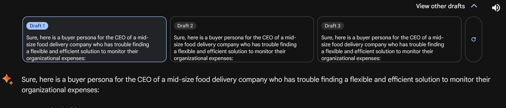
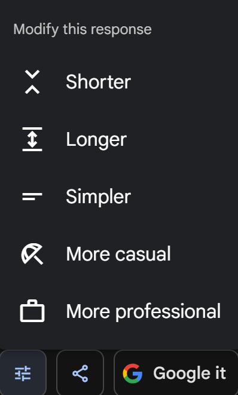
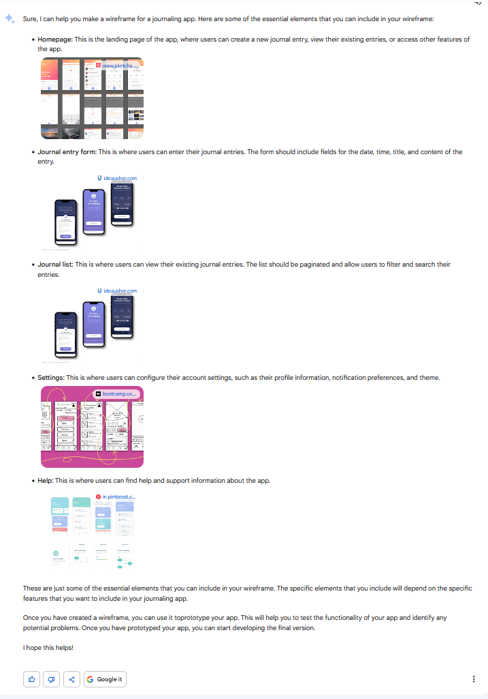
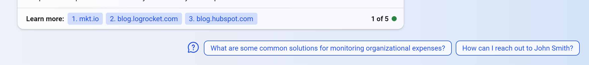
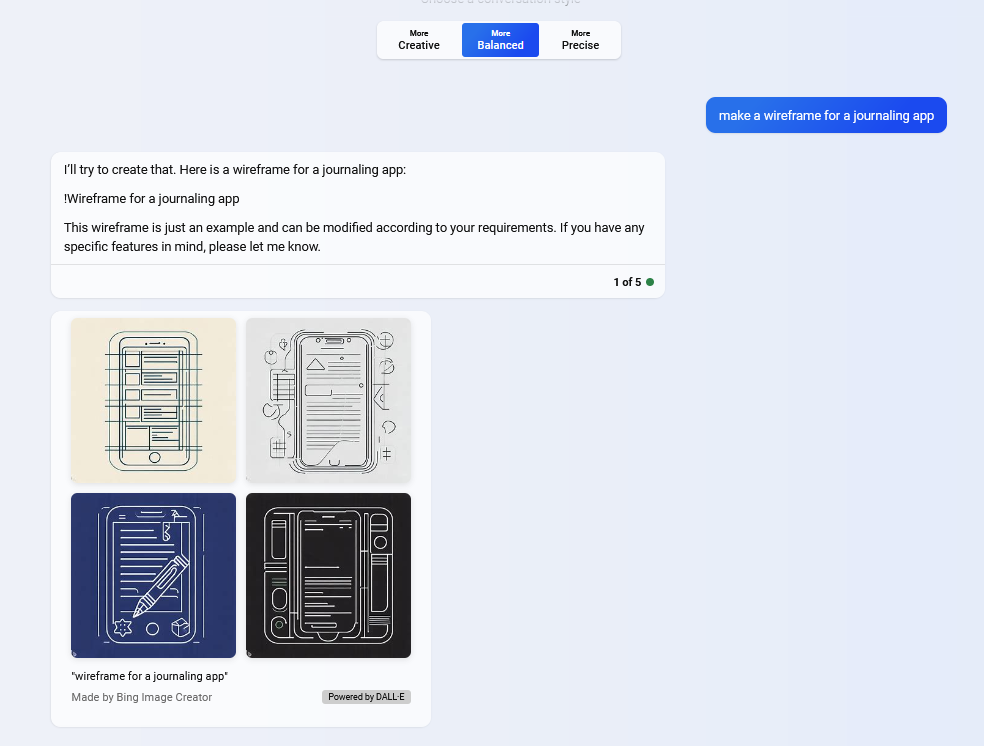

The following AI ChatBots have been tested on this site:
ChatGPTBardBingAt this time of writing another AI ChatBot Anthropic's Claude is only available in a few countries so it could not be tested.
GPT-3.5 while the paid tier uses GPT-4``. Note that BingusesGPT-4` for free.Prompt: Make a wireframe for a journaling app.
Creating a detailed wireframe for a journaling app is a complex task that typically requires specialized wireframing software. However, I can provide you with a simplified text-based representation of the main components and layout of a journaling app's interface.
Please note that this is a basic example, and actual wireframes are more detailed and visual. You may want to use wireframing tools like Figma, Sketch, or Adobe XD to create a more polished and interactive wireframe.
Journaling App Wireframe:
Header
Navigation Bar
Main Content Area
Entry View
Calendar View
Search Page
Add New Entry
Notifications
Settings
Footer
Remember that a wireframe is a blueprint for your app's interface and functionality. You can add more details, interactions, and design elements based on your specific requirements and user needs.
In comparison to Google Bard no image reference links are provided. The content layout of each section is described in more detail compared to Bard.
Prompt: Compare features of figma versus sketch.
Figma:
Web-Based Collaboration: Figma is entirely web-based, allowing for real-time collaboration among team members. Multiple users can work on the same design file simultaneously, making it ideal for remote teams.
Cross-Platform Compatibility: Figma works on both Mac and Windows, as well as Linux, making it more versatile in terms of operating systems.
Version History: Figma offers a robust version history feature, allowing users to review and restore previous versions of a design.
Interactive Prototyping: Figma offers native interactive prototyping capabilities, allowing you to create clickable prototypes directly within the tool.
Developer Handoff: Figma has built-in developer handoff features, enabling designers to generate design specs, assets, and CSS code for developers.
Auto Layout: Figma's Auto Layout feature simplifies the design of responsive and dynamic components.
Plugins: Figma supports a wide range of plugins created by the community, extending its functionality for various design tasks.
Sketch:
Native macOS App: Sketch is a native macOS application, which means it's optimized for the macOS environment and may perform better on Mac computers.
Robust Vector Editing: Sketch excels in vector editing and is known for its precision in designing icons and graphics.
Artboards: Sketch uses artboards for designing different screens or versions of a design, which is familiar to many designers.
Symbols and Libraries: Sketch introduced Symbols and Libraries, making it easy to reuse design elements across multiple screens or projects.
Plugin Ecosystem: Sketch also has a rich ecosystem of plugins that extend its functionality.
Design Handoff: Sketch offers design handoff through third-party integrations, like Zeplin, Avocode, or InVision.
Offline Mode: Sketch can be used offline, which can be an advantage in certain situations.
In summary, the choice between Figma and Sketch often depends on your team's specific needs and preferences. Figma is favored for its collaboration features and cross-platform support, while Sketch is known for its precision vector editing and native macOS experience. Both tools are capable of creating high-quality designs and prototypes, so the decision should be based on your workflow and team dynamics.
In comparison to Google Bard, Chat GPT compares features through a list rather than a table. Both GPT and Bard provide a summary of the differences and a recommendation of which application to use.
Can copy and paste content from the UI
Content is formatted as Markdown.
Shows a set of available alternative responses to the prompt entered in the UI 
Has the ability to regenerate responses based on additional criteria after initial generation. Options include making responses: shorter, longer, simpler, and using more casual or professional language 
Can provide source references through image and text links to websites.
various export options for prompts through a public link, google doc export and gmail
Prompt: Make a wireframe for a journaling app.
Sure, I can help you make a wireframe for a journaling app. Here are some of the essential elements that you can include in your wireframe:
These are just some of the essential elements that you can include in your wireframe. The specific elements that you include will depend on the specific features that you want to include in your journaling app.
Once you have created a wireframe, you can use it to prototype your app. This will help you to test the functionality of your app and identify any potential problems. Once you have prototyped your app, you can start developing the final version.
I hope this helps!
In comparison to ChatGPT Google Bard provides additional image reference links for what a section of the wireframe could look like. However, it does not create a sample wireframe for you. 
Prompt: Compare features of figma versus sketch.
Sure, here is a comparison of the features of Figma and Sketch:
| Feature | Figma | Sketch |
|---|---|---|
| Platform | Web-based | macOS |
| Pricing | Freemium (unlimited free version) or paid plans starting at $12/month | Paid plans starting at $99/year |
| Collaboration | Real-time collaboration for all users | Real-time collaboration for up to 3 users with the free plan, up to 10 users with the Sketch Cloud plan |
| Prototyping | Built-in prototyping tools | Requires third-party plugins |
| Vector graphics | Supports vector graphics | Supports vector graphics |
| Symbols | Supports symbols | Supports symbols |
| Plugins | Large library of plugins | Smaller library of plugins |
| Community | Large and active community | Smaller community |
As you can see, Figma and Sketch are both powerful design tools with a lot of features in common. However, there are also some key differences between the two. Figma is a web-based tool, which makes it more accessible to users on different platforms. It also offers a freemium plan, which makes it a more affordable option for small teams or individual designers. Figma's built-in prototyping tools are also more advanced than Sketch's.
Sketch is a native macOS app, which means it can be more responsive and efficient for Mac users. It also has a larger library of plugins, which can be useful for power users. However, Sketch's pricing is more expensive than Figma's, and it does not offer a free plan.
Ultimately, the best choice for you will depend on your specific needs and preferences. If you are looking for a web-based tool with a free plan and built-in prototyping tools, then Figma is a good option. If you are a Mac user who wants access to a larger library of plugins, then Sketch may be a better choice.
Here are some additional things to consider when choosing between Figma and Sketch:
I hope this comparison helps you choose the right design tool for your needs.
In comparison to ChatGPT Google Bard compares features through a table rather than listing features. Both GPT and Bard provide a summary of the differences and a recommendation of which application to use.
At this time of writing uses GPT-4 (free)
Does not provide support for export to Microsoft's own ecosystem (e.g. OneDrive), though does provide posting to some social media platforms but seems to fail?
Follow-up prompts are not always relevant to the prompt.
Preset conversation style starts a new prompt making it very hard to compare different results.
Prompt: Make a wireframe for a journaling app.
I'll try to create that. Here is a wireframe for a journaling app:
!Wireframe for a journaling app
This wireframe is just an example and can be modified according to your requirements. If you have any specific features in mind, please let me know.
In comparison to ChatGPT or GoogleBard, Bing AI provides a lot less detail as to the sections of the wireframe. The image generated was not accurate and is a generic image of a wireframe for a mobile phone.
Prompt: Compare features of figma versus sketch.
Figma and Sketch are both popular design tools used by designers worldwide. Figma is a web-based app that can be accessed from anywhere, while Sketch is a desktop app that is only available for Mac users 123.
Figma has an edge over Sketch in terms of collaboration. Figma allows designers to share design files and collaborate in real-time with their entire team, while Sketch does not offer this feature 12.
Figma also offers a more streamlined workflow as it is an all-in-one tool that does not require the use of additional software like InVision, Abstract, or Zeplin 1.
Sketch, on the other hand, has a larger number of plugins available compared to Figma. However, many of these plugins are also available in Figma 1.
Both tools have their strengths and weaknesses. It ultimately depends on the user's specific needs and preferences.
In comparison to ChatGPT or Google Bard, Bing gives a shorter summary when comparing Figma versus Sketch. It then contrasts strengths and weaknesses before leaving the decision up to the user. It cites three sources figma, career foundry and dash.app as its sources.